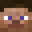

生物（Mobs）是指游戏世界中有生命的、可自主移动的一类实体。术语“Mob”是“Mobile（可移动的）”的简写。
生物存在是因为多种原因的生成。许多生物会自然地生成，但依赖于光照等级、生物群系以及它们的环境。生物一般以相同种类成群地生成。这些生物总是会在初次区块创建时生成。许多被动生物可以繁殖，除非它们是幼年的。生物一般不会自然生成于上表面不完整的方块、水里及熔岩中，但水生生物可以在水下生成，炽足兽会生成在熔岩表面。刷怪笼是个例外，它可以让生物自然地生成于任何地方（包括空气）。
某些生物（像雪傀儡和凋灵）在生成之前需要玩家“构建”它们。铁傀儡既可自然生成也可由玩家构建。
玩家也可以使用刷怪蛋，或者在允许作弊的情况下，使用/summon命令召唤生物。
具有相似的特征或弱点的生物被归为一类。
| 生物类型 | 说明 | 举例 | 备注 |
|---|---|---|---|
| 主控生物 | 玩家是接受直接控制进行游戏的生物。作为一种生物，能够影响生物的多种状态和效果也能够影响玩家。 |  玩家 |
|
| 被动型生物 | 被动型生物是和平的生物。 | 鸡 猪 河豚 |
目前只有河豚可以对其他生物造成伤害，但它们并不会主动攻击，其余生物即使被玩家攻击也不会进行反击，但被攻击后通常会逃跑。 |
| 中立型生物 | 中立型生物只在被激怒后攻击玩家。 | 铁傀儡 狼 末影人 |
有的生物（eg.铁傀儡、狼）被倾向于认为是非攻击性的生物，但它们仍然会在受到侵害时反击加害者。 有的生物（eg.末影人）是激进且易怒的生物，它们通常很容易被激怒并且非常危险，只在少数情况下不会攻击玩家。 |
| 攻击型生物 | 攻击型生物是危险而具有侵略性的生物，它们总会尝试攻击所看到的玩家。 | 僵尸 苦力怕 |
|
| Boss生物 | Boss生物是拥有多种攻击手段、坚韧且极具破坏性的攻击型生物，专为玩家设计用于更长期、更危险和更大规模的战斗。它们通常对大多数状态效果免疫，并且能够看到受隐身效果的生物。只有两种Boss生物存在。 | 末影龙  凋灵 |